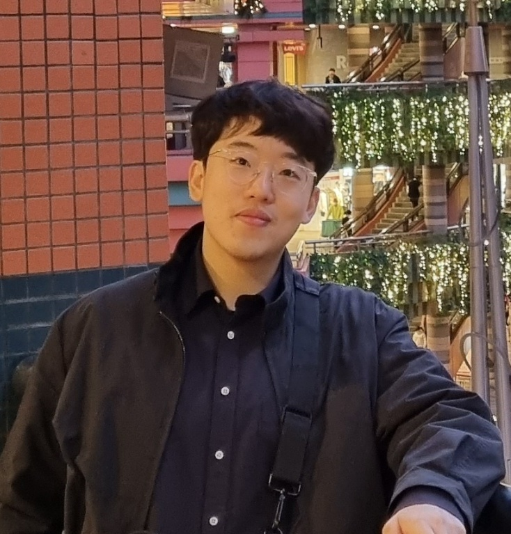

|
Jeonghwan Kim 👋Hi! I'm MS/PhD student in Seoul National University, advised by Hanbyul Joo. I love trying out new things and apply those to the works within my interest. My goal is to enable machines to perceive their surroundings and interact in a manner similar to humans, particularly in situations involving social interactions or manipulations.I received B.S in Rural Systems Engineering & Electrical Computer Engineering from Seoul National University. |
 |
|
Sep 2022
|

|
ParaHome: Parameterizing Everyday Home Activities Towards 3D Generative Modeling of Human-Object Interactions
Jeonghwan Kim*, Jisoo Kim*, Jeonghyeon Na, Hanbyul Joo arXiv, 2024 project page / video / arXiv |